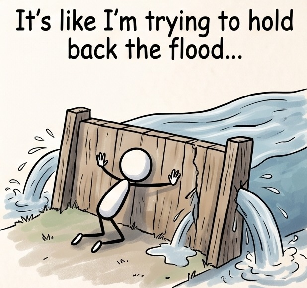

How To Use This Page
Test-drive Personos AI using realistic, pre-formatted coaching prompts before exploring your own personal goals and challenges.
The categories below represent Common GAPS — Goals to Achieve and Problems to Solve — designed to help you test drive Personos.
Each entry is pre-formatted to be copied and pasted directly into the Personos chat window.
Simply choose a scenario that interests you, copy the entire text block (all three sections) using the one-click Copy Scenario button, and paste it into the chat window in Personos.
This is a great way to experience the system's creativity and get comfortable with the platform before inputting your own personal challenges.
Pick a Common GAP Category
Choose between Rebuilding Life Challenges or Employment Challenges below to browse 9 real-world coaching scenarios.
Click "Copy Scenario"
Every card features a one-click button that copies all three prompt sections—framing, personal quote, and coaching instructions—to your clipboard.
Paste Into Personos AI
Paste the prompt into Personos to receive a tailored psychological insight plus five creative, strengths-aligned next steps.
Explore the Scenario Categories
Select a category below to view ready-to-copy coaching prompts and illustrations.

4 ScenariosRebuilding Life Challenges
Practice navigating high-stakes moments of recovery, emotional regulation, re-entering the workforce, overcoming environmental triggers, and building trust with support staff.
Explore Rebuilding Life Scenarios → 5 Scenarios
5 Scenarios
Employment Challenges
Test-drive coaching strategies for job search burnout, feeling passed over for promotion, toxic workplace management, major career pivots, and graceful resignations.
Explore Employment Scenarios →Combine Scenarios With Your Own THRiVE Profile
When you add your THRiVE Report summary into the "Other Notes" section of Personos, every scenario above automatically adapts its five next steps to match your personal strengths.